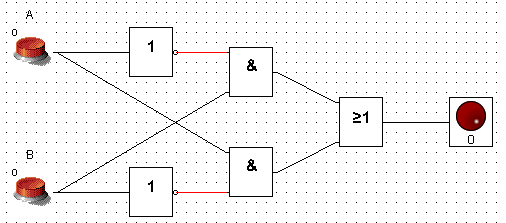
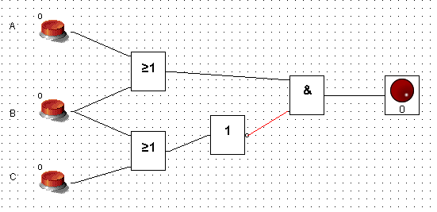

Du hast eine fertige Schaltung vor dir, aber keine Beschreibung, was sie tut. Genau das passiert in der Praxis bei alten Geräten, bei der Fehlersuche oder beim Prüfen fremder Chips.
Die Schaltungsanalyse in der Informatik befasst sich mit der Untersuchung von logischen Schaltungen. Hierbei geht es um das Erstellen von Wahrheitstabellen und booleschen Funktionen aus der gegebenen Schaltung, um das Verhalten der Schaltung zu verstehen und diese optimieren zu können.
Alltag: Die Schaltung aus Aufgabe 1 berechnet XOR – die Grundlage jeder Addition im Prozessor (→ 3.6 Halbaddierer). Wer eine Schaltung analysieren kann, versteht also, wie der Taschenrechner im Smartphone rechnet.
Berufsleben:
Schaltungsanalyse: Die Analyse einer Schaltung ist das Erstellen einer Wahrheitstabelle und einer booleschen Funktion aus einer gegebenen Schaltung.
Vorgehen:
Analysiere die folgenden Schaltungen (Wahrheitstabelle + boolesche Funktion).
Baue die Schaltungen anschließend in LogicSim nach und überprüfe dein Ergebnis.


Schaltungen werden in der Praxis oft nicht gezeichnet, sondern als Gatterliste (Netzliste) beschrieben: Jede Zeile nennt ein Gatter und woher seine Eingänge kommen. Gegeben ist die Schaltung S0 mit den Eingängen A, B, C:
| Gatter | Typ | Eingänge |
|---|---|---|
| G1 | NICHT | A |
| G2 | UND | G1, B |
| G3 | UND | A, C |
| f (Ausgang) | ODER | G2, G3 |